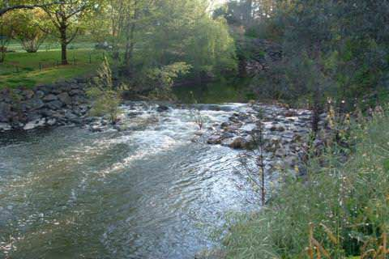
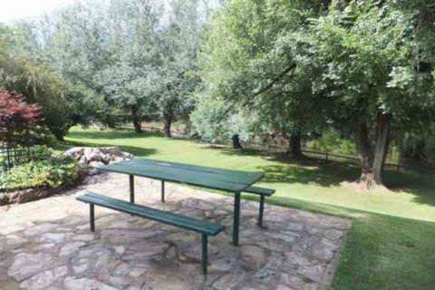

PHONE
PHONE GET DIRECTIONS
GET DIRECTIONS- 
- 
-

Where to look:
One spot is along the Bell River behind the parklands where you will also find the Visitors Information Centre in the centre of town. There's a suspension bridge for walkers. Further downstream, the Bell River joins the Macquarie at John Oxley Park (where there is also a boat ramp). This is another spot where platypus have been seen. Upstream, if you stay at either the Bridge Motel or Riverside Caravan Park (see details under the River Trail) right on the river, you may see platypus there also. Remember, the best times for platypus spotting are around dawn and dusk and you'll need to sit quietly.
LOCATION: Wellington